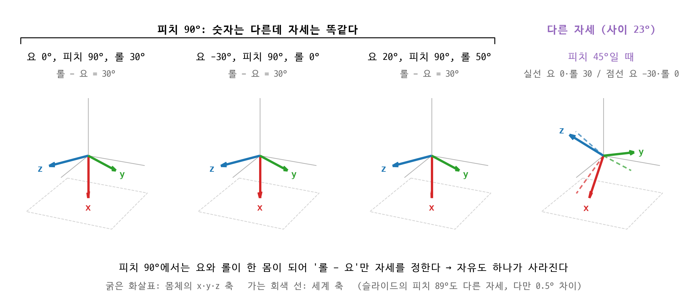
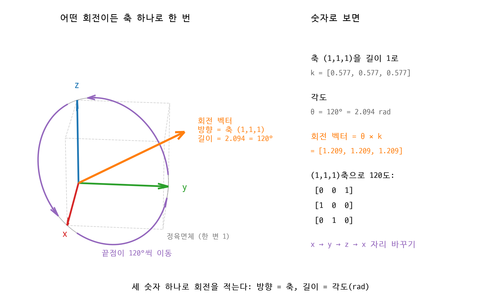

물체의 앞과 윗면을 보며 한 번씩 돌립니다. 어느 축을 붙잡고 도는지에 따라 달라지는 모습을 봅니다.
코드 블록을 내 컴퓨터에서 돌리는 방법은 예제 실행하기에 있습니다.
각도 세 개만 적으면 약속이 빠져 있습니다
내재와 외재: 어느 축을 기준으로 도나
Extrinsic(익스트린직·외재)은 처음 정한 기준축을 고정하고 도는 것입니다. Intrinsic(인트린직·내재)은 물체에 붙어 함께 돌아가는 현재 축을 기준으로 다음 회전을 하는 것입니다. 둘 다 첫 상태에서는 축이 같지만 첫 회전 뒤 두 번째 축이 어디에 있는지가 달라집니다.
같은 세 각도(Z40, Y20, X30), 두 방식으로 곱해 보기
이제 숫자로 끝까지 따라가겠습니다. 내재 회전은 현재 z축으로 40° → 그때의 현재 y축으로 20° → 다시 현재 x축으로 30°입니다. 외재 회전은 고정 X축으로 30° → 고정 Y축으로 20° → 고정 Z축으로 40°입니다. 두 경우 모두 처음 R=I에서 출발합니다.
| 실제로 회전한 단계 | 내재 ZYX · 현재 축에 대해 회전 | 외재 XYZ · 고정 축에 대해 회전 |
|---|---|---|
| 시작 | R=I | R=I |
| 첫 회전 | 현재 z로 40° R=I @ Rz(40)=Rz(40) | 고정 X로 30° R=Rx(30) @ I=Rx(30) |
| 둘째 회전 | 현재 y로 20°를 오른쪽에 추가 R=Rz(40) @ Ry(20) | 고정 Y로 20°를 왼쪽에 추가 R=Ry(20) @ Rx(30) |
| 셋째 회전 | 현재 x로 30°를 오른쪽에 추가 R=Rz(40) @ Ry(20) @ Rx(30) | 고정 Z로 40°를 왼쪽에 추가 R=Rz(40) @ Ry(20) @ Rx(30) |
외재: Rx(30) → Ry(20)Rx(30) → Rz(40)Ry(20)Rx(30)
마지막 행렬이 완전히 같습니다. 어느 단위축을 넣어도 최종 방향이 같으므로 최종 자세도 같습니다. 중간 자세와 실제로 거친 경로까지 같다는 뜻은 아닙니다. 표의 첫째·둘째 단계는 서로 다릅니다.
SciPy로 옮기면 어떤 문자열이 되나
SciPy로 옮기면 내재는 "ZYX", [40,20,30], 외재는 "xyz", [30,20,40]입니다. 축뿐 아니라 각 축에 붙은 각도도 함께 역순으로 맞춥니다. 앞에서 같은 X→Y 순서를 고정축/현재축으로 비교했을 때 결과가 달랐던 것과 구분하세요. 그때는 같은 순서를 비교했고, 지금은 순서와 각도를 뒤집어 맞춘 동등한 표현입니다.
롤10°, 피치20°, 요30°를 고정된 x→y→z 축 순서로 적용하면 R=Rz(30)Ry(20)Rx(10)입니다. 오른쪽부터 작용합니다. 축이 매번 몸과 함께 움직이는 내재 회전에서는 같은 세 숫자라도 다른 순서 정의가 됩니다.
R = Rz(30) @ Ry(20) @ Rx(10)
a = Rotation.from_euler("xyz", [10,20,30], degrees=True)
b = Rotation.from_euler("ZYX", [30,20,10], degrees=True)이 소스에서 사용하는 SciPy 약속은 소문자 고정축, 대문자 움직이는 축입니다. "xyz",[10,20,30]과 "ZYX",[30,20,10]은 같은 결과를 주지만 "XYZ",[10,20,30]은 일반적으로 다릅니다. 문자열뿐 아니라 각도 배열의 순서도 함께 읽습니다.
시범: 같은 x→y 순서라도 고정축과 현재축이면 결과가 다릅니다 (선택)
시범으로 초기 z화살표 v=(0,0,1)를 놓고 첫 x90° 회전을 합니다. 화살표는(0,−1,0)이 됩니다. 여기서 멈춰 두 번째 y축을 봅니다. 외재 회전의 y는 아직 고정된(0,1,0)입니다.
화살표가 그 축 위에 있으므로 이어 고정 y90°를 해도(0,−1,0)입니다. 내재 회전의 현재 y축은 첫 x회전과 함께(0,0,1)로 돌아가 있습니다. 이 현재 축을 중심으로90° 더 돌리면 화살표는(1,0,0)이 됩니다.
고정 X90 → 고정 Y90: R = Ry(90) @ Rx(90), Rv=(0,−1,0)
현재 x90 → 현재 y90: R = Rx(90) @ Ry(90), Rv=(1,0,0)
같은 “x먼저 y나중”과 같은90°라도 고정축인지 현재축인지에 따라 순서와 결과가 달라집니다. 그림에서 물체를 보는 카메라 시점을 돌린 것과 물체에 붙은 축 자체가 도는 것을 구분하세요. 앞 수업의 회전 시범에서 내재·외재 비교 모드로 첫 단계와 둘째 단계를 따로 볼 수 있습니다.
유도: 왜 외재는 왼쪽, 내재는 오른쪽에 곱하나 (선택)
왜 내재 ZYX와 외재 XYZ는 같은 최종 자세가 될까요?
지금은 열벡터에 행렬을 왼쪽에서 곱하는 능동 회전을 씁니다. 자세 행렬 R은 현재 몸의 축과 벡터를 고정된 세계 기준으로 적어 줍니다. 처음에는 몸의 축과 세계 축이 같아 R=I입니다. 같은 자세에 회전을 하나 더할 때, 어느 축을 기준으로 더하느냐에 따라 새 행렬을 붙이는 쪽이 달라집니다.
외재는 왼쪽에 붙입니다. 현재 벡터의 세계 성분이 Rv라고 합시다. 고정된 세계 축으로 E만큼 더 돌리면 그 결과에 E를 적용하므로 E(Rv)=(ER)v입니다. 그래서 새 자세는 R_새 = E @ R입니다. “이미 돌아 있는 물체 전체를 고정축 기준으로 한 번 더 돌린다”라고 읽으세요.
내재는 오른쪽에 붙입니다. 새 자세의 축이 현재 몸 축에서 어떻게 돌아갔는지를 U로 적습니다. 새 축의 단위벡터 v를 현재 몸 기준으로 적으면 Uv이고, 이것을 기존 자세 R로 세계 기준에 옮기면 R(Uv)=(RU)v입니다. 그래서 새 자세는 R_새 = R @ U입니다. U는 현재 물체에 붙은 축을 기준으로 한 회전입니다.
내재의 첫 z40°를 실제로 수행한 뒤에는 다음 y축이 이미 물체와 함께 돌아가 있습니다. 식 Rz(40) @ Ry(20)에서 오른쪽 Ry가 먼저 벡터에 적용된다고 읽는 것은, 그 현재 축의 성분을 세계 성분으로 계산하는 순서입니다. 내재 동작을 실제로 y부터 했다는 뜻은 아닙니다. 실제 동작 순서는 표의 위에서 아래로, 좌표를 계산할 때의 작용 순서는 식의 오른쪽에서 왼쪽으로 읽습니다.
따라 하기: 표의 내재 첫 줄 Rz(40)에서 시작해 둘째 Ry(20)를 오른쪽에 적어 보세요. 외재 첫 줄 Rx(30)에서는 둘째 Ry(20)를 왼쪽에 적습니다. 셋째 회전까지 적으면 두 식이 같은 Rz(40) @ Ry(20) @ Rx(30)으로 만납니다. 회전행렬을 서로 교환해서 맞춘 것이 아니라, 기준축 약속에 따라 처음부터 곱이 쌓이는 쪽이 달랐던 것입니다.
위 장면(두 물체 나란히) 사용법과 축 약속 메모 (선택)
두 순서를 나란히 놓고 한 단계씩 돌려 봅니다
방금 표에 적은 두 과정을 실제 자세로 보겠습니다. 왼쪽은 내재 ZYX, 오른쪽은 외재 XYZ입니다. 축에 붙은 각도는 모두 같고, 실제로 적용하는 순서만 역순입니다. 기본값은 왼쪽 Z40°→현재 Y20°→현재 X30°, 오른쪽 고정 X30°→고정 Y20°→고정 Z40°입니다.
따라 하기: 처음 자세로 단계0의 같은 두 물체부터 봅니다. 다음 단계 재생을 한 번 눌러 왼쪽 Z40°와 오른쪽 X30°가 만든 자세를 대조합니다. 한 번 더 누르면 왼쪽은 이미 돌아간 현재 y축, 오른쪽은 그대로인 고정 Y축을 기준으로20°씩 돕니다. 마지막 단계에서는 서로 다른 현재 X30°/고정 Z40° 조작을 마치고 두 물체의 축이 다시 일치합니다. 두 최종 행렬이 같아서입니다.
느린 재생으로 두 번째 회전축이 어디에 있는지 보고, 이전 단계로 돌아가 같은 시점에서 다시 대조해 보세요. 기본값에서 중간 자세가 다르다는 관찰이지 모든 각도에서 중간 자세가 반드시 다르다는 법칙은 아닙니다. 예를 들어 회전각을0°로 두면 일찍 같아질 수 있습니다. 자세 차이 숫자와 실제 물체축을 함께 확인합니다.
이 장면은 역순으로 맞춘 두 표현의 등가입니다. 앞 수업의 “같은 X→Y 순서에서 고정축과 현재축을 비교”하는 장면, 다음 “피치90°에서 조절축이 정렬되는 짐벌 락” 장면과 각각 확인하는 질문이 다릅니다. 여기서는 특이점이 없어도 마지막 자세가 같습니다.
몸+x앞,+y왼쪽,+z위에서는 +y축 양의회전이 앞을 아래로 보냅니다. “피치 양수=코 들기”라는 말은 이 수업 축 약속에서 그대로 쓰지 않습니다.
02-frames-rotations\b10_euler_scipy.py · 읽을 줄 1–16
cd C:\code\src\robo\vol3\02-frames-rotations
..\..\.venv\Scripts\python.exe b10_euler_scipy.py소문자 'xyz'(고정 축) == Rz@Ry@Rx ? True
대문자 'ZYX'(움직이는 축) == Rz@Ry@Rx ? True
대문자 'XYZ'(움직이는 축) == Rz@Ry@Rx ? False
행렬에서 다시 읽은 요·피치·롤: [30. 20. 10.]같은 최종 자세를 소문자 'xyz'(고정축)와 대문자 'ZYX'(움직이는 축)로 적는 약속의 차이입니다. 대문자 'XYZ'는 같지 않습니다.
짐벌 락은 몸이 갑자기 못 움직인다는 뜻이 아닙니다


피치 90°에서 같은 자세가 되는 식
이번 3D 시범은 같은 초기 자세에서 두 가지 조작을 나란히 합니다. A는 피치를90°로 고정한 뒤 현재 x축 롤을+30° 더합니다. B는 같은 피치90°에서 고정 z축 요를−30° 더합니다. 이 순간 현재 x축이 고정 z축과 반평행하므로, 반대 부호의 두 조작이 같은 최종 자세가 됩니다.
따라 하기: 피치90°에서 A(롤30°,피치90°,요0°)와 B(롤0°,피치90°,요−30°)의 세 축을 겹쳐 봅니다. 그다음 피치만80°로 바꾸면 현재 x축과 고정 z축이 더 이상 같은 선이 아니므로 두 자세가 갈라집니다. 피치0°에서도 일치하지 않습니다. δ를 다른 값으로 바꿔도90°에서의 같은 축 관계는 유지됩니다.
피치+90°: Rz(0) Ry(90) Rx(δ) = Rz(−δ) Ry(90) Rx(0)
이때 잃는 것은 실제 강체의 회전 능력이 아니라 오일러 세 매개변수로 독립적인 미소 변화를 적는 능력입니다. 다른 회전 표현을 쓰면 자세 자체는 계속 계산할 수 있습니다. 피치90°를 아주 조금 벗어나면 두 축은 다시 독립이지만 가까운 곳에서는 역으로 각도를 읽는 계산이 민감해집니다.
앞에서 배운 회전행렬 조건과도 모순되지 않습니다. 짐벌 락에서도 최종 물체의 x·y·z축은 서로 직각이고 RRᵀ=I, det(R)=1이며 R⁻¹=Rᵀ가 그대로 성립합니다. 겹치는 것은 최종 물체의 x축과 z축이 아니라 회전을 조절하는 고정 요축(world z)과 현재 롤축(current x)입니다. 오일러 매개변수의 특이점 때문에 회전행렬의 역행렬까지 없어지는 것은 아닙니다.
Rz(요)Ry(피치)Rx(롤)에서 피치90°이면 (요,롤)=(0,30),(−30,0),(20,50)이 모두 같은 자세입니다. 각 숫자는 다르지만 요−롤이 모두−30°입니다. 자세에서 세 각을 거꾸로 하나씩 유일하게 읽을 수 없게 됩니다.
물체 자체의 공간 회전자유도가 사라진 것이 아니라 이 세 각으로 자세 변화를 설명하는 표현이 특이해진 것입니다. 기계식 짐벌의 축 정렬 문제와 연결할 수는 있지만 일반 강체가 실제 회전능력을 잃었다고 읽지 않습니다. 피치89°에서는 이 세 묶음이 정확히 같지 않습니다.
02-frames-rotations\b11_gimbal.py · 읽을 줄 1–27
cd C:\code\src\robo\vol3\02-frames-rotations
..\..\.venv\Scripts\python.exe b11_gimbal.py요 0, 롤 30 == 요 -30, 롤 0 ? True
요 0, 롤 30 == 요 20, 롤 50 ? True
피치 89도에서도 같은가? False
되읽은 요·피치·롤: [-30. 90. 0.]
경고: Gimbal lock detected. Setting third angle to zero since it is not possible to uniquely determine all angles.피치 89도까지는 롤·요 조합이 구별되지만 90도에서는 요와 롤이 같은 자세를 만들고 SciPy도 경고를 냅니다. 경고 문장은 stderr로 나옵니다.
이 쪽의 그림을 만든 파일(같은 폴더, 실행하면 그림 PNG를 저장): 02-frames-rotations\s62_gimbal_lock.py
축 하나와 각 하나로 같은 회전을 적습니다


노름·정규화·로드리게스 식
이번에는 세 각을 차례로 돌리는 대신 축 하나를 중심으로 각도 하나만큼 도는 회전을 적겠습니다. 사용자가 그린 v=[a,b,c]를 여기서는 회전벡터라고 정합니다. 세 성분은 롤·피치·요 세 각이 아닙니다. 이 벡터의 방향에 회전축을, 길이에 회전각을 담은 표현입니다.
먼저 v=(0,0,π/2)를 보겠습니다. 길이는 π/2≈1.5708이고, 각도 단위가 rad이므로90°입니다. 그 길이로 벡터를 나누면 (0,0,1), 즉 +z 방향의 단위축이 나옵니다. 따라서 “+z축으로90°”라는 회전입니다. 벡터의 세 숫자를 각 축의 회전각으로 따로 읽은 결과가 아닙니다.
노름(norm): θ=‖v‖=√(a²+b²+c²) rad
θ>0일 때 축: k=v/θ, ‖k‖=1
노름(norm)은 벡터의 길이를 구한 값입니다. 정규화(normalize)는 0이 아닌 벡터를 자기 길이로 나누어 방향은 유지하고 길이를1로 맞추는 일입니다. 지금 v를 정규화한 결과가 회전축 k입니다. 원래 회전각 θ는 따로 보존해야 합니다. k만 새 회전벡터로 넣으면 원래 각도가 아니라 길이1, 즉1rad인 회전이 됩니다.
따라 하기: +z 90° 버튼으로 v=(0,0,π/2)를 놓고 처음부터 회전 재생을 누릅니다. 축과90° 회전을 먼저 본 뒤 길이 두 배를 누르세요. v=(0,0,π)가 되어 길이는 πrad=180°, 정규화한 축은 여전히 (0,0,1)입니다. 회전 없음 버튼에서는 회전각0과 움직이지 않는 물체를 볼 수 있습니다.
v=(0,0,0)이면 θ=0이며 회전축은 정해지지 않습니다. 0으로 나누어 축을 만들지 않습니다. 회전하지 않는 결과는 어느 축으로0° 돌아도 같기 때문입니다. 화면이 참고축을 그리더라도 영벡터에서 그 축을 계산해 얻은 것으로 읽지 마세요.
이 길이를 각도라고 읽는 것은 v를 회전벡터로 정의했기 때문입니다. 위치벡터의 길이는 거리이고 속도벡터의 길이는 속력입니다. 임의의 [a,b,c]에 노름을 취했다고 자동으로 회전각이 되는 것은 아닙니다. 또한 오일러의 [롤,피치,요]에 이 공식을 적용해 회전벡터의 축·각이라고 부르지 않습니다.
직접 나눠 보는 다른 예: v=(1,2,2)
회전벡터로 정의한 (1,2,2)는 길이 √(1+4+4)=3rad≈171.887°입니다. 세 성분을3으로 나누면 축은 (1/3,2/3,2/3)이고 그 길이는1입니다. 정규화 과정에서 성분마다 제각각의 수로 나누는 것이 아니라 같은 길이3으로 모두 나눕니다.
교안의 예는 축 k=(1,1,1)/√3, 각120°=2π/3rad입니다. 회전벡터는 kθ≈(1.20920,1.20920,1.20920)입니다. 성분 하나가120°라는 뜻이 아니라 벡터 전체 길이가2.0944rad, 즉120°입니다.
R = I + sinθ K + (1−cosθ)K²
로드리게스 식은 회전축 방향의 성분은 유지하고, 축에 수직인 평면에서 나머지 성분을 돌립니다. 여기서 u는 돌릴 일반 벡터로, 회전을 적는 v와 구분했습니다. 교안 예의 행렬은 [[0,0,1],[1,0,0],[0,1,0]]이어서 x→y→z→x로 순환합니다. 축 입력이0벡터면 정규화할 수 없으며, 0회전은 항등행렬로 따로 처리합니다.
02-frames-rotations\b12_rodrigues.py · 읽을 줄 1–26
cd C:\code\src\robo\vol3\02-frames-rotations
..\..\.venv\Scripts\python.exe b12_rodrigues.py(1,1,1)축으로 120도:
[[0. 0. 1.]
[1. 0. 0.]
[0. 1. 0.]]
x축은 어디로? [0. 1. 0.]
scipy와 같은가? True
행렬에서 읽은 회전 벡터: [1.209 1.209 1.209] / 길이: 120.0 도(1,1,1)축 120도 회전이 x→y→z→x로 순환하는 행렬이 되는지 로드리게스 식으로 계산하고 SciPy와 비교합니다.
이 쪽의 그림을 만든 파일(같은 폴더, 실행하면 그림 PNG를 저장): 02-frames-rotations\s63_rotation_vector.py
시범 뒤에 순서를 하나만 바꿔 봅니다
앞으로 향한 막대를 고정된 y축으로 돌리면 아래를 향합니다. 이 막대는 z축 둘레로 더 돌려도 그대로입니다. 순서를 뒤집으면 왼쪽을 향해 끝납니다.
회전 순서 하나만 바꿔 계산
앞 수업에서 Rx먼저→Rz나중이면 앞 (1,0,0)이 왼쪽 (0,1,0)으로 갔습니다. 이제 Rx를Ry로 바꿉니다. Ry90°가 앞을 아래 (0,0,−1)로 보내고 z회전은 이 벡터를 바꾸지 않습니다. 반대 순서로 z 먼저면 앞이 왼쪽으로 가고 y회전은 그대로 둡니다. 결과는 각각 (0,0,−1), (0,1,0)입니다.
따라 하기: b08_order.py의 원래 두 출력부터 확인한 뒤 이 변형을 계산하거나 별도 복사본에서 바꿉니다. np.sin(30)과 np.sin(np.deg2rad(30))도 대조하면 단위 실수를 함께 볼 수 있습니다.
단위 실수는 배열 크기 검사로 잡히지 않습니다
같은 “90”도 도인지 rad인지에 따라 다른 회전입니다. 코드는 숫자만 보고 단위를 알아내지 못하므로 입력 전에 단위를 붙입니다.
도와 rad를 코드에서 구분
선택 확인 · np.cos(90)은0인가요?
약 −0.4480736입니다. 함수는90rad로 받습니다. cos(deg2rad(90))이 부동소수점 오차 범위에서0입니다.
단위가 다른 값도 같은 실수형 숫자이기 때문에 파이썬은 자동으로 틀렸다고 알려주지 않습니다. 변수 이름 각도_도, 각도_rad와 함수 약속을 함께 확인합니다.
사람에게 보여 줄 표현과 계산 표현을 연결합니다
앞 화살표 하나를 정해 두고 서로 다른 표현으로 돌려 봅니다. 행렬·세 각·쿼터니언의 숫자가 닮았는지보다 같은 방향에 도착했는지를 비교합니다.
표현이 달라도 같은 회전인지 확인
롤·피치·요는 사람이 자세를 말할 때 편하지만 축·순서와 특이점을 함께 관리해야 합니다. 행렬·회전벡터·쿼터니언은 같은 자세를 다른 방식으로 적습니다. 세 표현의 숫자를 서로 직접 비교하기보다 동일한 단위축을 돌린 결과가 같은지 확인하면 뜻이 연결됩니다.
기존 오일러·쿼터니언 조작실에서 먼저 (롤 0, 피치 0, 요 90)을 선택해 앞이 왼쪽을 향하는지 확인하고, 피치90에서는 서로 다른 롤·요가 같은 자세를 만드는 예를 대조할 수 있습니다. 이 보관판은 로컬 3D 라이브러리와 내장 Canvas를 사용합니다.
브라우저로 여는 조작실: 02-frames-rotations\gimbal_quaternion_lab.html
스스로 확인하기
답은 글에서 찾지 않고 예제를 직접 돌리거나 한 줄 바꿔 돌려서 얻습니다. 숫자는 이 컴퓨터에서 나온 값입니다.
수업 근거와 원문 보기
교안·교과서·기존 1일차 필기와 그림을 하나의 설명 흐름으로 재구성했습니다. 아래 쪽수는 PDF 파일의 페이지 순서입니다. 예전 그림 안의 슬라이드 쪽수는 수정 전 교안의 번호일 수 있습니다.
교안: 49쪽, 50쪽, 51쪽, 52쪽, 53쪽, 54쪽
교과서: 67쪽, 68쪽, 69쪽, 70쪽, 71쪽
기존 실습 필기와 파일명·축 약속 교정. 그림과 코드는 기존 학습 폴더의 보관 사본에서 필요한 부분만 재사용했습니다.
재사용 자료: s62_gimbal_lock.png, s63_rotation_vector.png, b10_euler_scipy.py, b11_gimbal.py
이 글의 출력 숫자는 이 컴퓨터(MuJoCo 3.17.0, 파이썬 3.12.3)에서 예제를 직접 돌린 값입니다. 그림은 해당 s## 파일이 그린 것입니다. 본문의 손계산 예는 조건을 함께 적었습니다.